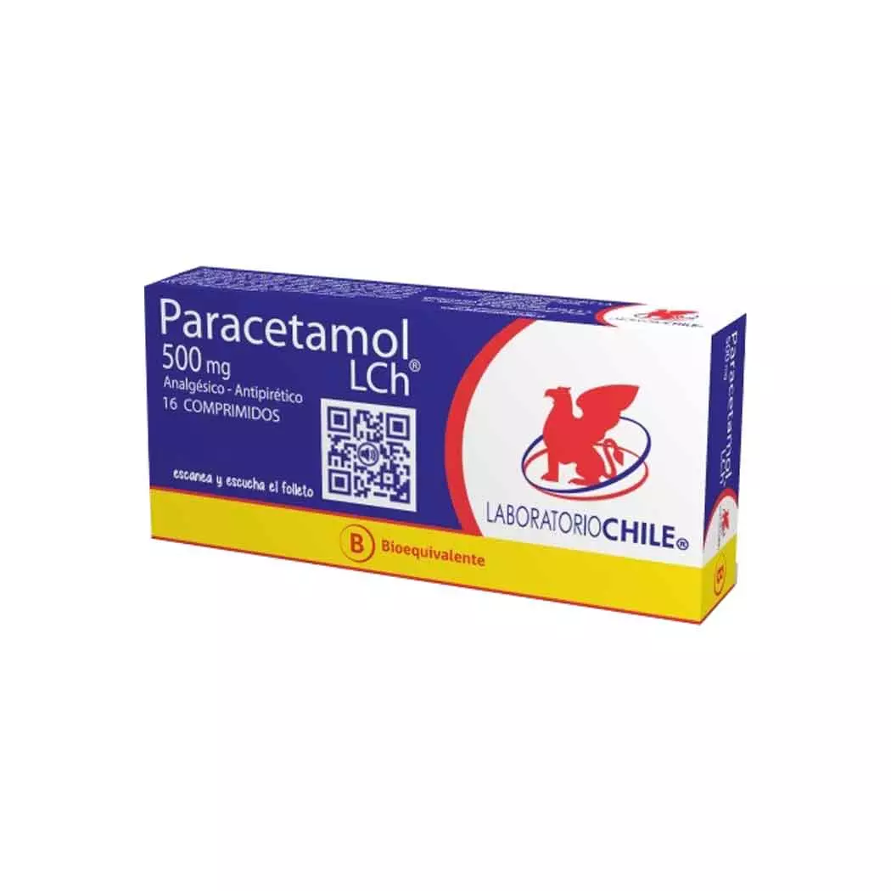

PARACETAMOL

DEFINICION:
El paracetamol, también conocido como acetaminofén o acetaminofeno o p-Acetilaminofenol, es un fármaco con propiedades analgésicas y antipiréticas utilizado principalmente para tratar la fiebre y el dolor leve y moderado,
aunque su eficacia en el alivio de la fiebre en niños no está clara.
CANTIDAD MAXIMA:
Los adultos no deben tomar más de 3,000 mg de paracetamol como único ingrediente al día.
Debe tomar menos si es mayor de 65 años. Tomar más, especialmente 7,000 mg o más, puede llevar a una fuerte sobredosis.
Requiere receta medica: NO, No requiere de una receta medica.
(TECNOMEDICAL LE RECUERDA QUE NO SE AUTOMEDIQUE Y SIEMPRE ACUDA A UN ESPECIALISTA).
EFECTOS SECUNDARIOS:
Algunos efectos secundarios que podria presentar el paracetamol son:
mareos, vómitos, pérdida de apetito, coloración amarillenta de la piel y los ojos y dolor abdominal.
DONDE PUEDO ENCONTRARLO:
Esta es la ubicacion de algunos locales en la ciudad de coquimbo con stock disponible.